22 NOVEMBER 2026 · DUSKWOOD · LEVEL 25
The Roads
Beyond Darkshire.
Raven Hill’s lost history, the hermit at his door and the little camp by the western river. Nine promises have been kept since the arrival; the next roads are already calling.
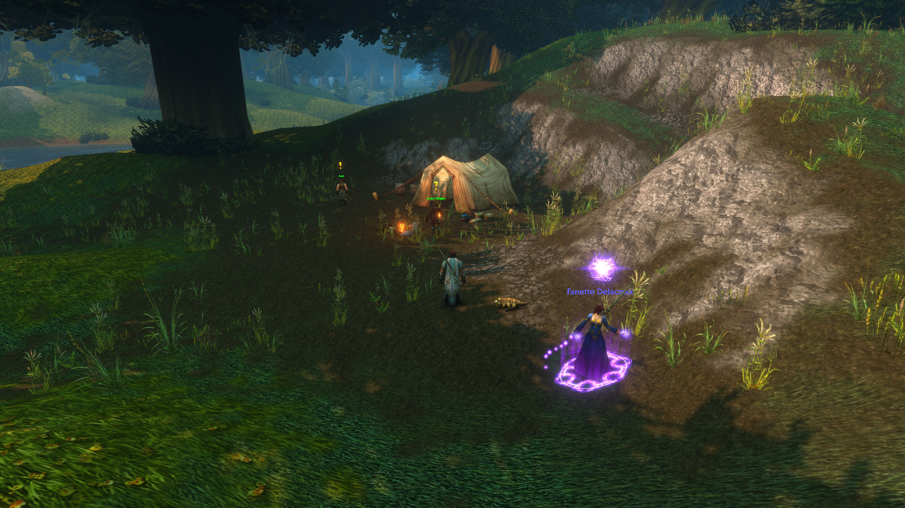
THE STORY CONTINUES
The forest’s questions have become people.
The late watch on 21 November carries Xuthar beyond the town’s lamps: a stone bridge, Watcher Backus, and the Lost Stalker waiting in the mist. On the following morning the road reaches Raven Hill’s ruined arches and Abercrombie’s clearing, then Sven and Lars at their tent beside the river.
The newly completed quests give those roads a human purpose. Jitters is found alive and needs a meal. The Raven Hill Tome restores a piece of the Valor family’s history. Supplies reach Sven’s company, and Lars’s wolf hunt is finished. The hermit’s welfare visit leads back toward Madame Eva, while Grual’s kitchen answers the forest’s hunger with ingredients both familiar and surprising.
Several stories remain open. The crab cakes are prepared, but Return to Jitters is still active. The search for Ghost Hair Thread now points toward Blind Mary. Sven’s Revenge asks for the buried clue at his former farm. Ira’s Dagger carries an unfinished task of its own, and the first Night Watch cemetery commission is still in the official log.
Chapters 179–186 of The Last Witness follow those promises through the forest. At the twenty-fifth threshold, Xuthar carries Raven Hill’s recovered names beside the questions still waiting beyond the next lantern.
NINE NEWLY VERIFIED COMPLETIONS
The promises now kept.
These IDs have appeared among completed quests since the published arrival snapshot: 248 → 257. The interval includes late 21 November and 22 November; the API does not date each individual hand-in.
| Completed quest | Objective fulfilled | Its place in the story |
|---|---|---|
| Jitters' Growling Gut#5 · ✓ Completed | Speak with Chef Grual in Darkshire about food for Jitters. | Jitters is alive among the abandoned houses; his immediate need is a proper meal. |
| Seasoned Wolf Kabobs#90 · ✓ Completed | Bring Chef Grual ten Lean Wolf Flanks. | A completed kitchen commission brings an ordinary comfort back into the story. |
| Dusky Crab Cakes#93 · ✓ Completed | Bring Chef Grual six Gooey Spider Legs for the cakes. | The misleading name hides Grual’s unusual ingredient. The onward delivery to Jitters remains open. |
| Supplies from Darkshire#148 · ✓ Completed | Speak with Madame Eva about Ghost Hair Thread for Abercrombie. | The supply inquiry is complete; Ghost Hair Thread is the active next stage. |
| Raven Hill#163 · ✓ Completed | Investigate the reported haunting at Raven Hill and find Jitters. | An apparent haunting leads to a frightened survivor. |
| Deliveries to Sven#164 · ✓ Completed | Deliver the provided supplies to Sven Yorgen’s camp. | Aid reaches the isolated western camp. |
| The Hermit#165 · ✓ Completed | Check on Abercrombie near Raven Hill Cemetery. | The welfare visit is complete, and the hermit’s further requests have begun. |
| Wolves at Our Heels#226 · ✓ Completed | Defeat twelve Starving Dire Wolves and eight Rabid Dire Wolves for Lars at Sven’s camp. | The threat to camp supplies and the surrounding paths has been reduced. |
| The Valor Family#96139 · ✓ Completed | Find the Raven Hill Tome and bring it to Sirra Von’Indi. | The recovered history answers the first family inquiry; Ira’s Dagger remains a separate active obligation. |
SIXTEEN ACTIVE OVERALL · TEN DUSKWOOD COMMISSIONS
The road still ahead.
| Active quest | What remains to be done |
|---|---|
| Ira's Dagger#96137 · In progress | Defeat ten Young Black Ravagers and seven Black Ravagers, then speak to Sirra Von’Indi. |
| Look to the Stars#174 · In progress | Bring Viktori one Bronze Tube for his stargazing device. |
| The Totem of Infliction#101 · In progress | Bring Madame Eva 10 Ghoul Fangs, 10 Skeleton Fingers and 5 Vials of Spider Venom. |
| Ghost Hair Thread#149 · In progress | Take the Spectral Comb to Blind Mary south of Darkshire. |
| Worgen in the Woods#173 · In progress | Defeat 6 Nightbane Shadow Weavers for Calor in Darkshire. |
| The Night Watch#56 · In progress | Defeat 8 Skeletal Warriors and 6 Skeletal Mages at Tranquil Gardens, south of Darkshire. |
| Crime and Punishment#377 · In progress | Obtain the Hand of Dextren Ward in the Stormwind Stockade for Millstipe. |
| Sven's Revenge#95 · In progress | Search behind the old stump at Sven’s former farm for the buried object. |
| Return to Jitters#240 · In progress | Take the prepared Dusky Crab Cakes back to Jitters in Raven Hill. |
| The Legend of Stalvan#67 · In progress | Investigate the Moonbrook Schoolhouse for information about Stalvan. |
Crime and Punishment belongs to the Darkshire story but sends Xuthar to the Stockade. The other six older obligations remain in the full quest log.
THE PHOTOGRAPHIC CHRONICLE
Seventeen originals. Two days on the road.
Every file remains exactly as supplied, at 1920×1080. Select a photograph to open its full-size original. Times below come from the capture filenames; the photograph with the interface preserves an older tracker, while current totals appear above.
Saturday, 21 November · The late watch
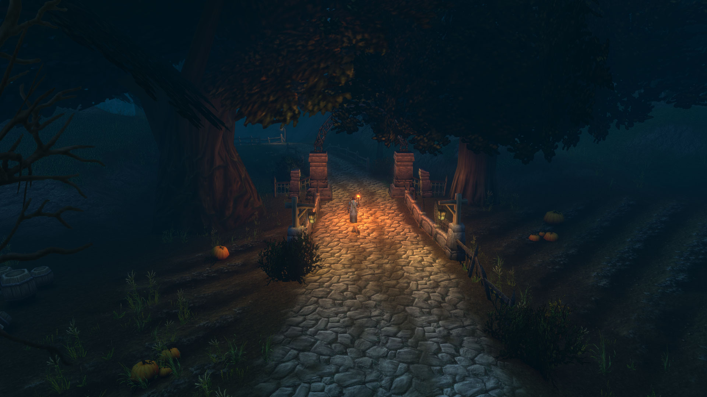

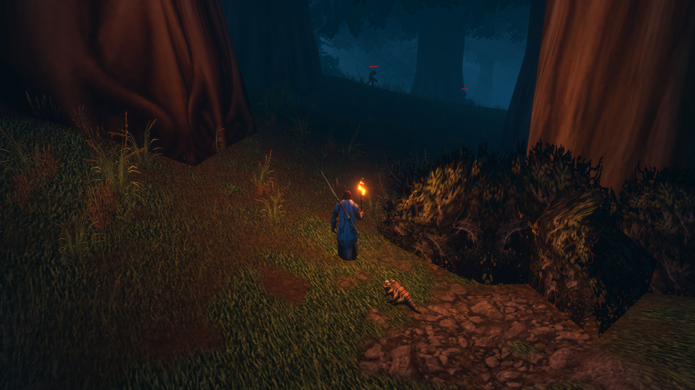

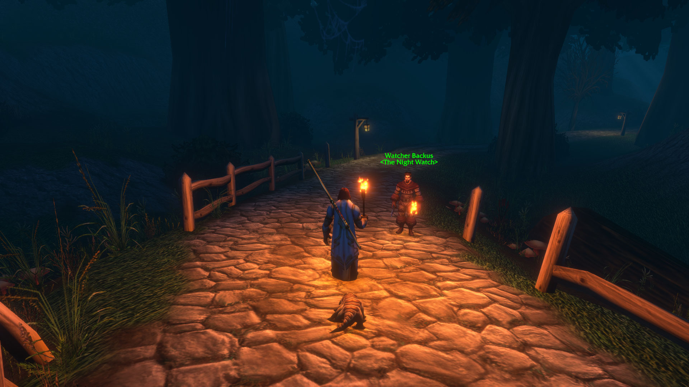

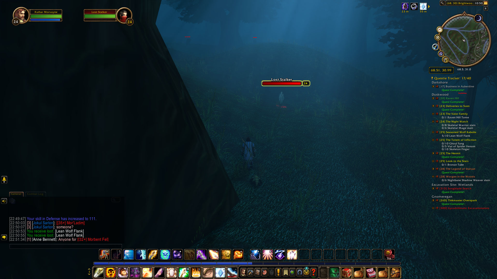

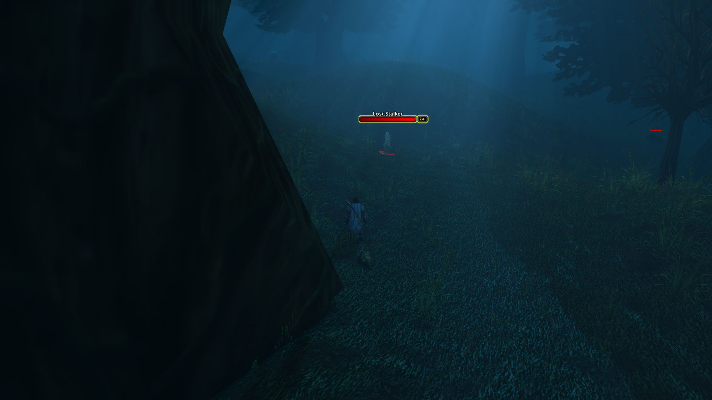

Sunday, 22 November · The western roads
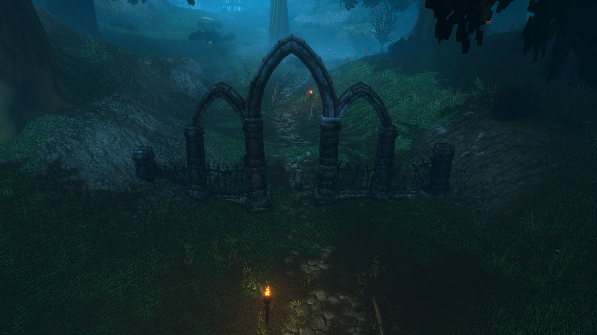

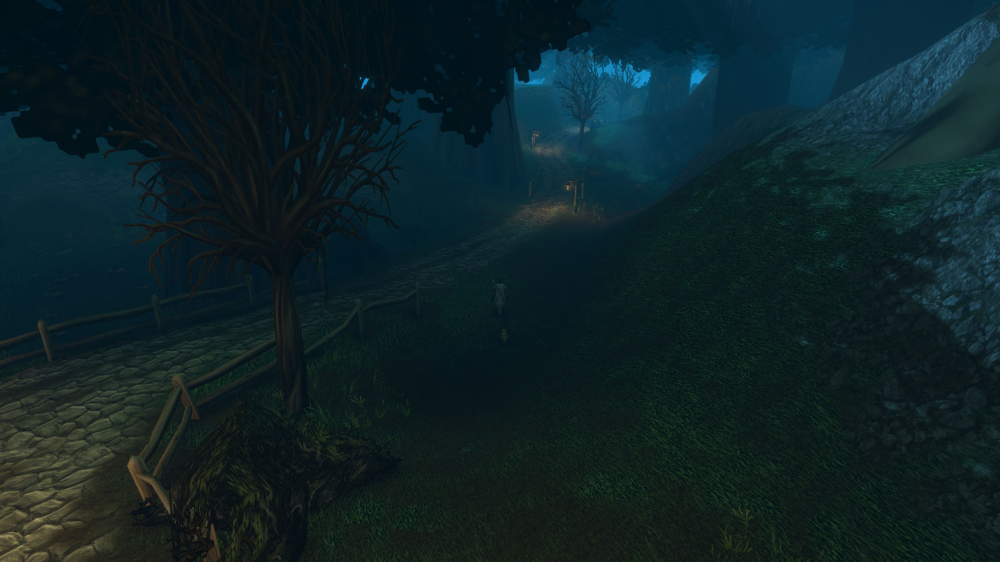

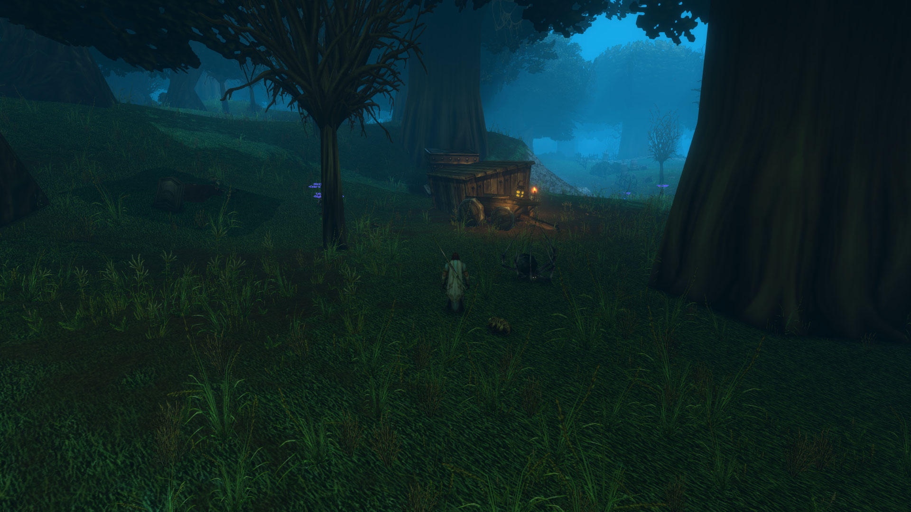

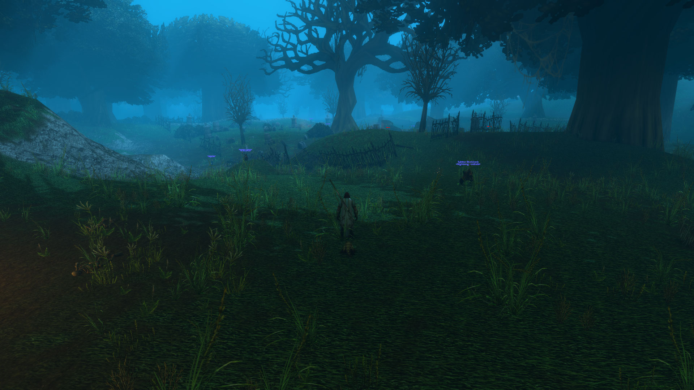

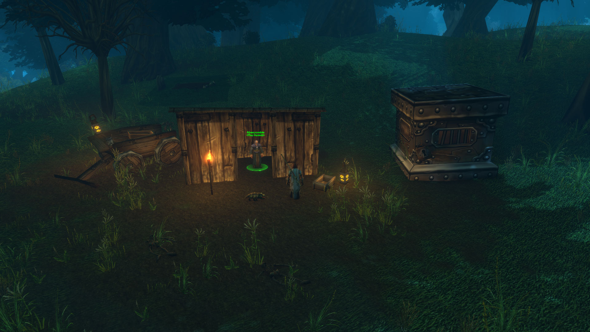


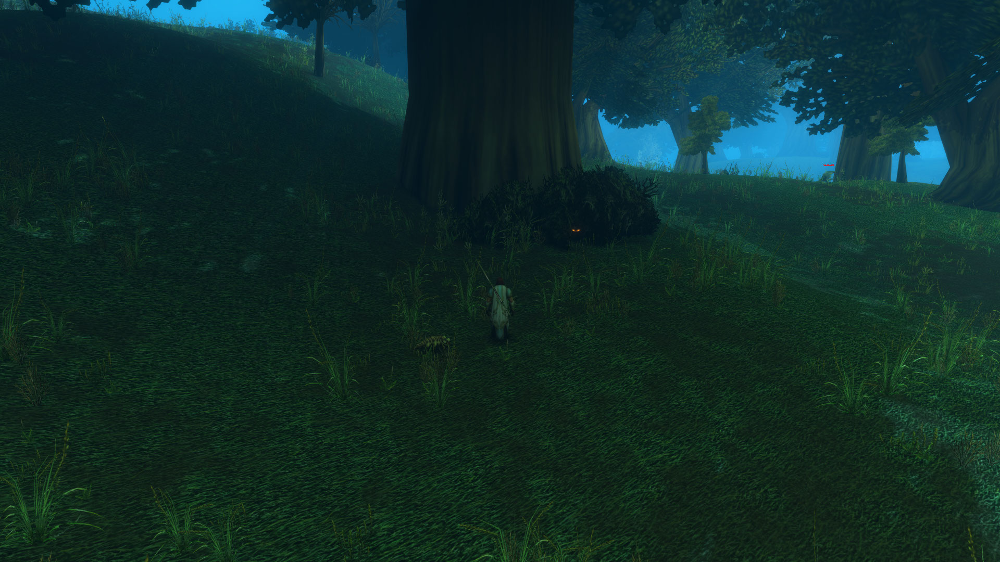

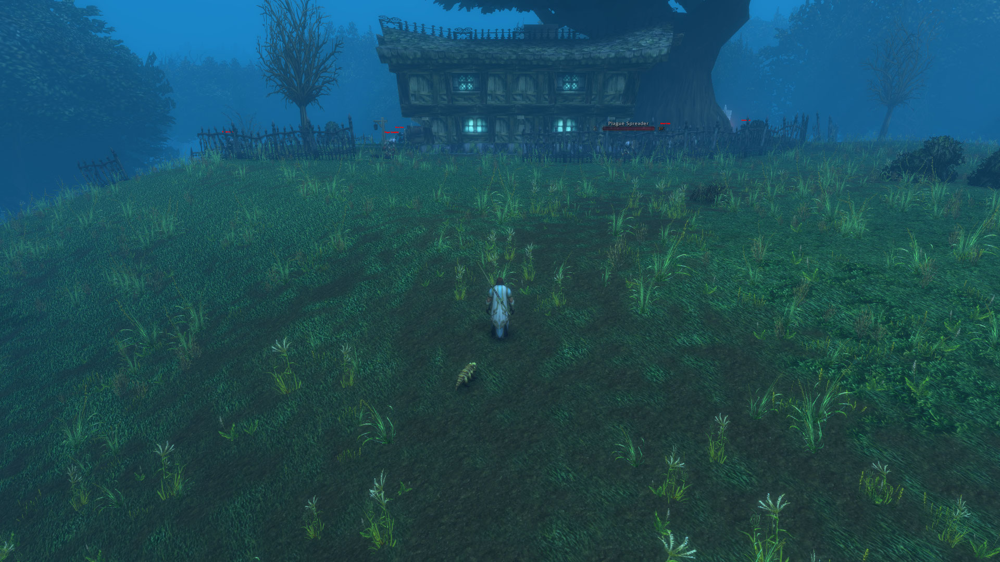


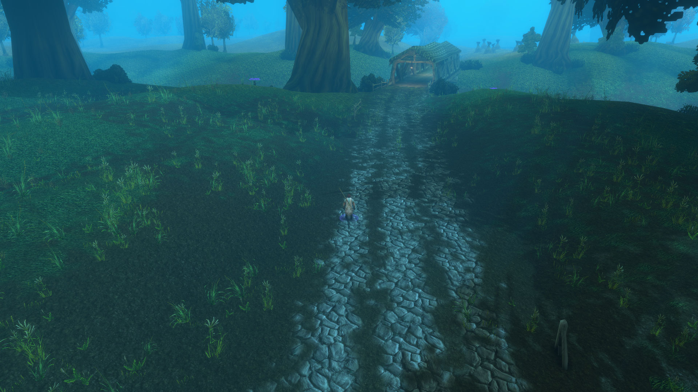

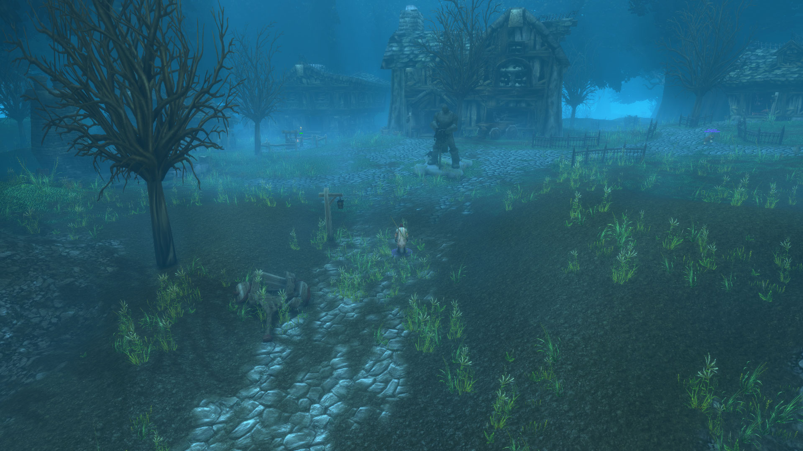

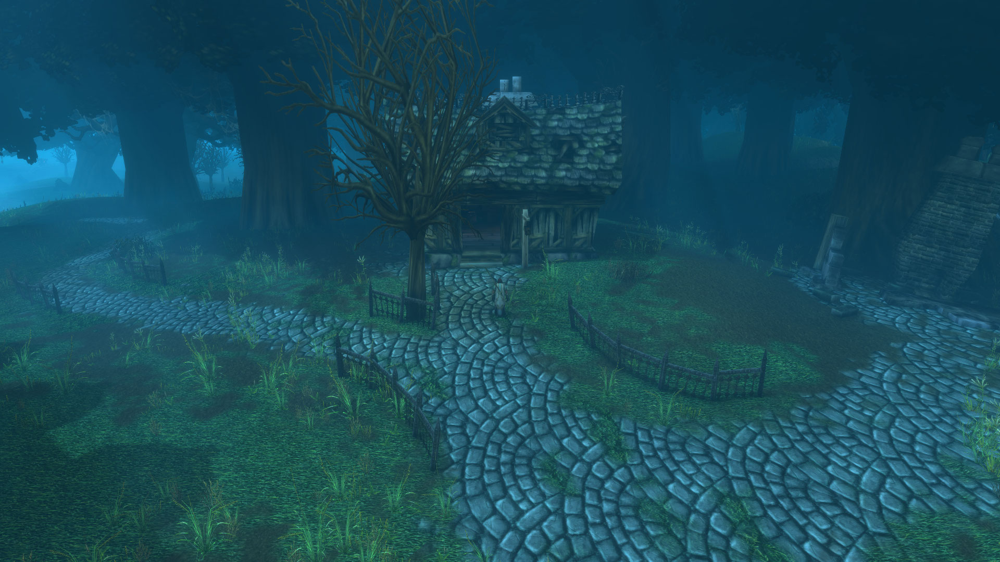

THE DATED RECORD
Quest state and story sources.
Official Blizzard Forever EU snapshot: 22 November 2026 · 15:11:38 Italy. Level 25, 257 completed quest IDs, sixteen active. The completed set includes ten Duskwood IDs in all, including the earlier Stalvan introduction. Quest titles in the tables link to their Forever descriptions; summaries are original paraphrases.
Read the dated progress and photograph record · Official Blizzard Armory